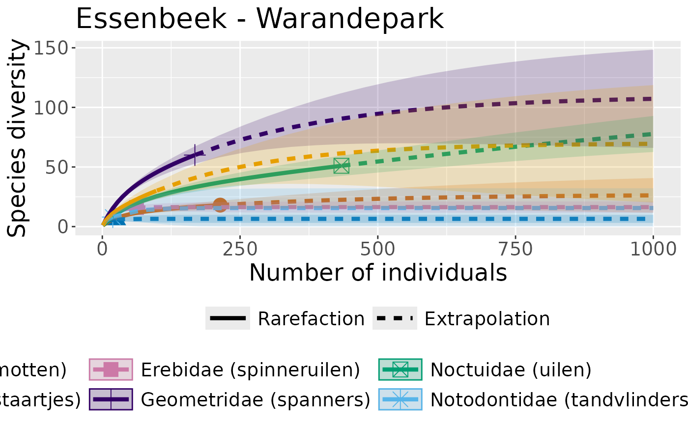
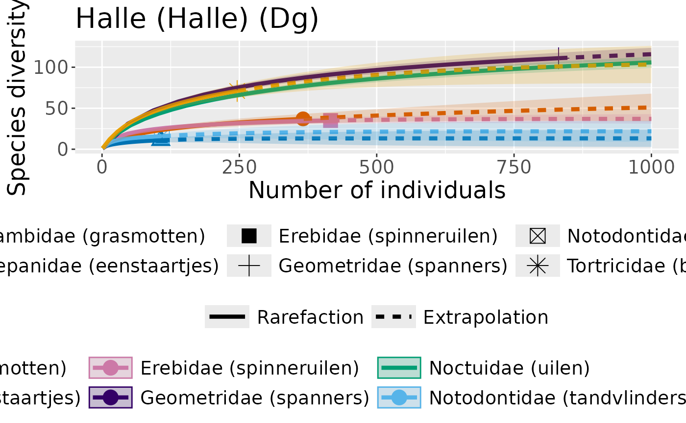

Plotting data from a waarnemingen.be export
Source:vignettes/plotting-waarnemingen-data.Rmd
plotting-waarnemingen-data.RmdReading some data from waarnemingen.be
data("waarnemingen_dirk")
dplyr::glimpse(waarnemingen_dirk)
#> Rows: 3,116
#> Columns: 39
#> $ id <chr> "43536654", "43652196", "44214377", "44439034",…
#> $ date <date> 2009-06-19, 2009-07-01, 2009-08-13, 2009-08-30…
#> $ time <hms> NA secs, NA secs, NA secs, NA secs, NA secs, NA…
#> $ created <date> 2009-06-23, 2009-07-01, 2009-08-13, 2009-08-30…
#> $ species_name <chr> "Bruine huismot", "Oranje iepentakvlinder", "Or…
#> $ scientific_name <chr> "Hofmannophila pseudospretella", "Angerona prun…
#> $ family <chr> "Oecophoridae (sikkelmotten)", "Geometridae (sp…
#> $ `species type` <chr> "Soort", "Soort", "Soort", "Soort", "Soort", "S…
#> $ `species group` <chr> "Nachtvlinders en micro's", "Nachtvlinders en m…
#> $ number <dbl> 1, 1, 1, 1, 1, 1, 1, 1, 1, 1, 1, 1, 1, 1, 1, 1,…
#> $ sex <chr> "U", "F", "M", "U", "U", "U", "U", "U", "U", "U…
#> $ `life stage` <chr> "onbekend", "onbekend", "onbekend", "onbekend",…
#> $ activity <chr> "ter plaatse", "ter plaatse", "ter plaatse", "t…
#> $ method <chr> NA, NA, NA, NA, NA, "onbekend", NA, NA, NA, NA,…
#> $ `counting method` <chr> NA, NA, NA, NA, NA, NA, NA, NA, NA, NA, NA, NA,…
#> $ `related species` <chr> NA, NA, NA, NA, NA, NA, NA, NA, NA, NA, NA, NA,…
#> $ source <chr> "Site", "Site", "Site", "Site", "Site", "Site",…
#> $ location <chr> "Halle (Halle) (Dg)", "Halle (Halle) (Dg)", "Ha…
#> $ lat <dbl> 50.71853, 50.71847, 50.71859, 50.71853, 50.7185…
#> $ lng <dbl> 4.260185, 4.260120, 4.260185, 4.260185, 4.26015…
#> $ modified <date> 2009-09-17, 2009-11-02, 2009-09-17, 2009-09-17…
#> $ `country division` <chr> "Vlaams-Brabant", "Vlaams-Brabant", "Vlaams-Bra…
#> $ country <chr> "België", "België", "België", "België", "België…
#> $ `validator name` <chr> NA, "Wim Veraghtert", NA, NA, NA, "Wim Veraghte…
#> $ `last validation date` <date> NA, 2009-07-01, NA, NA, NA, NA, NA, NA, NA, NA…
#> $ `local x` <dbl> 142333, 142329, 142333, 142333, 142331, 142331,…
#> $ `local y` <dbl> 156447, 156441, 156455, 156447, 156444, 156444,…
#> $ accuracy <dbl> 999, 999, 999, 999, 999, 999, 999, 999, 999, 99…
#> $ notes <chr> NA, NA, NA, NA, NA, NA, NA, NA, NA, NA, NA, NA,…
#> $ `validation status` <chr> "O", "J", "O", "O", "O", "A", "O", "O", "O", "O…
#> $ substrate <chr> NA, NA, NA, NA, NA, NA, NA, NA, NA, NA, NA, NA,…
#> $ `is certain` <lgl> TRUE, TRUE, TRUE, TRUE, TRUE, TRUE, TRUE, TRUE,…
#> $ `is escape` <lgl> FALSE, FALSE, FALSE, FALSE, FALSE, FALSE, FALSE…
#> $ obscurity <dbl> 0, 0, 0, 0, 0, 0, 0, 0, 0, 0, 0, 0, 0, 0, 0, 0,…
#> $ `embargo date` <lgl> NA, NA, NA, NA, NA, NA, NA, NA, NA, NA, NA, NA,…
#> $ `external reference` <dbl> NA, NA, NA, NA, NA, NA, NA, NA, NA, NA, NA, NA,…
#> $ `has photos` <lgl> FALSE, TRUE, FALSE, FALSE, FALSE, FALSE, FALSE,…
#> $ `has sounds` <lgl> FALSE, FALSE, FALSE, FALSE, FALSE, FALSE, FALSE…
#> $ `link;` <chr> "https://waarnemingen.be/observation/43536654/;…We only need a few of these columns, let’s demonstrate by plotting rarefaction curves for the families in this dataset, for the two locations in the dataset.
First get rid of any rows with missing data. Let’s only keep columns we are going to use, and add a year column. Let’s also remove any families with less than 100 individuals observed
families_to_plot <-
waarnemingen_dirk %>%
dplyr::group_by(family) %>%
dplyr::summarise(n_individuals_observed = sum(number)) %>%
dplyr::filter(n_individuals_observed >= 100) %>%
dplyr::pull(family)
waarnemingen_cleaned <-
waarnemingen_dirk %>%
dplyr::select(date,
species_name,
family,
number,
location) %>%
dplyr::mutate(
year = lubridate::year(date)
) %>%
dplyr::filter(!is.na(family),
!is.na(location),
family %in% families_to_plot)Let’s group by location, and then create some plots:
waarnemingen_grouped_by_location <-
dplyr::group_by(waarnemingen_cleaned, location)
area_names <-
dplyr::group_keys(waarnemingen_grouped_by_location) %>%
dplyr::pull(1)
waarnemingen_grouped_by_location %>%
dplyr::group_map(
~convert_to_abundance(.x, family)
) %>%
purrr::map(~iNEXT::iNEXT(.x,
datatype = "abundance",
nboot = 50,
endpoint = 1000)) %>%
purrr::map2(area_names,~iNEXT::ggiNEXT(.x) + ggplot2::ggtitle(.y))
#> [[1]]
#> Warning: The shape palette can deal with a maximum of 6 discrete values because more
#> than 6 becomes difficult to discriminate
#> ℹ you have requested 7 values. Consider specifying shapes manually if you need
#> that many have them.
#> Warning: Removed 1 row containing missing values or values outside the scale range
#> (`geom_point()`).
#>
#> [[2]]